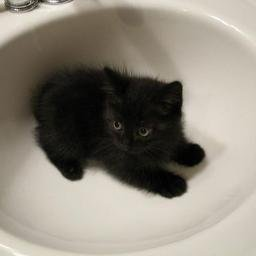

Piękne kotki



1. Koty są absolutnie prześliczne. Ich malutkie noski, mięciutkie łapki i puchate ogony. I ten wzrok przeszywający duszę na wskroś. Majestatyczny chód sprawia, że nie można oderwać od nich wzroku.
2. Koty potrafią zapewniać świetną rozrywkę. Widzieliście kiedyś kota, który zapomniał, że wystawił język? Humor można sobie również poprawić, patrząc na przykład na kota, który śpi. Jedna z ulubionych zabaw właścicieli to zgadywanka: Gdzie jest przód? Gdzie jest tył? I gdzie ten kot ma kręgosłup?
3. Koty robią z ciebie mądrego człowieka. A przynajmniej tak twierdzi Uniwersytet w Bristolu, który w 2010 wykazał, że właściciele kotów mają większe szanse na uzyskanie tytułów naukowych niż właściciele psów.
4. Koty obniżają poziom stresu, a w rezultacie ryzyko chorób serca. Głaskanie kota jest niesamowicie relaksujące, zwłaszcza gdy ten mruczy. Pewne badanie wykazało, że osoby, które regularnie głaskały koty przez 10 lat, mają o 30% mniejsze szanse na śmierć z powodu zawału lub udaru w porównaniu do osób niegłaszczących kotów.
5. Koty poprawiają jakość snu (chyba, że akurat biegają jak oszalałe w środku nocy). Co prawda żaden naukowiec tego jeszcze nie potwierdził, ale miło się śpi, jak ktoś ci grzeje nóżki.
6. Kotów nie trzeba wyprowadzać na spacer. Gdy patrzę przez okno na zimny, deszczowy wieczór, siedząc na kanapie pod kocykiem i głaszcząc kotka, myślę sobie o tych wszystkich biednych opiekunach psów, którzy właśnie przeklinają, idąc na spacer z psem w strugach deszczu.
7. Wbrew temu, co mówią psiarze, koty kochają ludzi bardziej niż jedzenie. Badanie z 2017 roku udowodniło, że koty wolą kontakt z człowiekiem niż jedzenie, zabawki czy używki. Szach mat psiarze!
8. Koty są czyściutkie. Same dbają o swoją higienę. I jeśli są zdrowe, to pięknie pachną.
9. Oglądanie kotów dodaje energii i poprawia humor. Badanie na Uniwersytecie Bloomington w Indianie wykazało, że nawet oglądanie filmików z kotami na Youtube znacząco zmniejsza ilość negatywnych emocji w oglądającym.
10. Koty są mniej zależne od człowieka niż psy. Dlaczego jest to ich zaletą? Gdy przyjdą się do ciebie przytulić, przychodzą, bo naprawdę tego chcą. Nie muszą. Po prostu mają ochotę się przytulić.